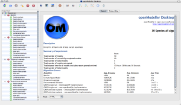
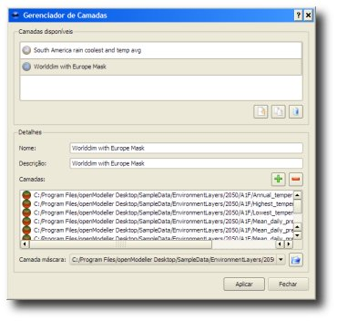
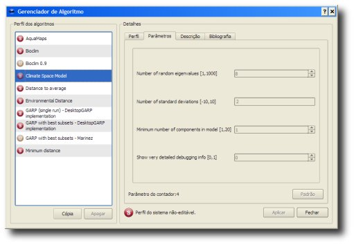
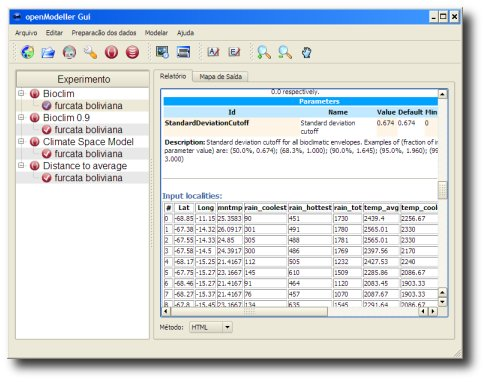
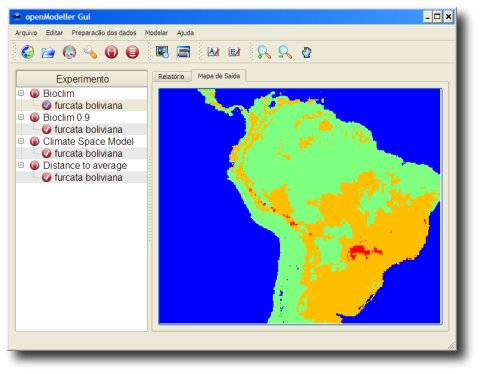
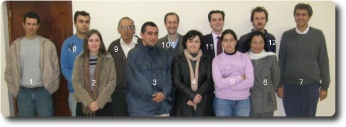

{kind=link}

Thursday, 31 May 2012
In general, programmers are not good at advertising their work as they are always busy implementing new things, fixing bugs, interacting with users and writing reports. So, the fact that you don't see any news here for some time doesn't mean that there's no activity going on. Actually, right now there are many exciting activities related to openModeller being carried out. This post gives you an overview of what's happening. There are currently three projects promoting specific improvements in openModeller. An extension to the INCT - Virtual Herbarium funded by the Brazilian government will soon release a web application to generate niche models for species of the Brazilian Flora. The Random Forests algorithm (already released in version 1.2) was implemented as part of this project. In this new system, all models will be generated by openModeller, but this effort will actually be carried out in a partnership with another project called EUBrazil-OpenBio. This second project is being jointly funded by the Brazilian government and the European Commission, and it involves several institutions from both sides. It has the ambitious goal of creating a Virtual Research Environment offering access to biodiversity data and tools, including niche modelling. In this particular case, the main idea is to investigate different ways of efficiently running openModeller on the Cloud, including parallelization strategies. It will also develop an advanced web interface (similar to openModeller Desktop) to generate niche models. The same project is also funding a new implementation of the Maximum Entropy algorithm in openModeller. Preliminary results look promising (you can check here), indicating that we will finally be able to produce similar results to the original Maxent software. The third project, BioVeL, is entirely funded by the European Commission. CRIA is participating with many European institutions. Here, the main idea is to enhance existing tools and services so that researchers can use a workflow management tool (in this case Taverna) to design and run complex tasks related to bioinformatics and biodiversity informatics. BioVeL will promote many improvements in the openModeller Web Service inteface including not just functionality but also documentation and tests. We already managed to run the first niche modelling workflows and we hope to soon release them to the public.
Monday, 03 October 2011
Version 1.2 of the openModeller framework and command line tools is now available for download. This release contains the new algorithm Random Forests and new versions of ENFA, Maxent and Environmental Distance. There were also changes in the Web Service, command line interface and the framework itself. Click here to get more information about this release and download it.
Monday, 15 February 2010
Version 1.1 of the openModeller framework and command line tools is now available for download. This release includes two new algorithms - ENFA (Ecological Niche Factor Analysis) and Niche Mosaic - and a new version of the Maximum Entropy algorithm based on the Maxent paper (Phillips et al., 2006). It also contains a few adjustments in other existing algorithms (GARP, AquaMaps, ANN, CSM and Mahalanobis distance).
More details can be found here.
Friday, 21 August 2009
If you want to know how openModeller works and why it was created, GeoInformatica has just published a new paper as an electronic Online First article with this information:
http://www.springerlink.com/content/n805714x26265573/
Now the following reference can be used to cite openModeller:
Muñoz, M.E.S., Giovanni, R., Siqueira, M.F., Sutton, T., Brewer, P., Pereira, R.S., Canhos, D.A.L. & Canhos, V.P. (2009) "openModeller: a generic approach to species' potential distribution modelling". GeoInformatica. DOI: 10.1007/s10707-009-0090-7
As soon as it gets published in a paginated issue, you will be able to add volume number and page range to the citation. The publications section will be updated accordingly when the corresponding journal issue gets compiled.
Friday, 22 May 2009
This release contains only a few adjustments and minor feature enhancements, but it consolidates all work that was done during the last 4 years as part of a thematic project funded by Fapesp. Some people are still working on additional features that will hopefully be incorporated in future releases, such as a new version of the maximum entropy algorithm (Maxent), a new algorithm called Niche Mosaic and paralellized versions of GARP.
Version 1.0 includes adjustments in algorithms (ANN and SVM), command line tools (om_model and om_niche) and ROC curve procedures. It also contains improvements in the modelling protocol, and model statistics (possibility to use lowest presence threshold). More details about this release can be seen here.
Thursday, 15 January 2009
Version 0.7.0 of the openModeller library is now available. This release contains the following main changes/features:
Please note that the previous release (0.6.1) also includes these changes:
More details about the latest release can be found here.
Monday, 06 October 2008
A new document is available to help those who are interested in adding new algorithms in openModeller. All algorithms must be written in C++. Apart from that, the framework is quite flexible to accommodate new algorithms since they are completely free to decide how distribution models will be represented. The new manual is available here.
Wednesday, 20 August 2008
The Global Biodiversity Information Facility (GBIF) recently released a new version of its data portal allowing users to generate niche models in real time. After searching for occurrence records, users have the option to create a niche model when visualizing results.
The data portal uses a Java client that can communicate with a remote modelling service through the openModeller Web Service protocol (OMWS). The Java client was developed by the University of Colorado, and the modelling service by CRIA. Initially, models are being generated only for present time using the Envelope Score algorithm.
GBIF is the world largest biodiversty data portal, currently serving more than 140 million specimen/observation records of which 80% are georeferrenced.
Tuesday, 08 July 2008
Version 0.6.0 of the openModeller library is now available. This release contains mainly new features, including:
The GARP Best Subsets algorithm was also changed to accept the "max threads" parameter, which can be used to speed up the modelling process in multi-processor machines.
More details about this release can be found here.
Thursday, 24 April 2008
A new version of the openModeller library is available. This release (0.5.3) contains many bugfixes and a new algorithm called Aquamaps. The algorithms "minimum distance" and "distance to average" were removed since EnvironmentalDistance now provides the same functionality. The TerraLib drivers were updated for compatibility with TerraLib 3.2.0. There are two new classes for pre-analysis on input layers to perform jackknife and chi-square (only available as library classes - their functionality still need to be exposed in the command-line and/or Desktop interfaces).
More details about this release can be found here.
Friday, 26 October 2007
It is our great pleasure to announce the immediate availability of openModeller Desktop Version 1.0.6 is a generic framework for carrying out fundamental niche modelling experiments - typically used to predict species distribution given a set of environmental raster layers. The openModeller Desktop application builds on the openModeller library by providing a user friendly graphical user interface for carrying out niche modelling experiments.
This release introduces several new features including:
The release also includes numerous improvements, bug fixes and stability improvements. openModeller Desktop is available in source form, and as binary executables for Microsoft Windows, Mac OS X, and Ubuntu 7.10 GNU/Linux. All versions can be obtained from our download page. As an open source project, we provide support for using openModeller via our mailing lists and bug tracker:
Known Issues:
Tuesday, 08 May 2007
A new version of the openModeller library is available. This release (0.4.2) contains some bugfixes and two new features:
For developers, the Log object is now a singleton instead of a global variable.
Friday, 20 April 2007
It is our great pleasure to announce the immediate availability of openModeller Desktop Version 1.0.5 is a generic framework for carrying out fundamental niche modelling experiments - typically used to predict species distribution given a set of environmental raster layers. The openModeller Desktop application builds on the openModeller library by providing a user friendly graphical user interface for carrying out niche modelling experiments. This release introduces several new features including improved reporting, automated retrieval of locality data from online databases such as GBIF, Mac OS X build, and many other enhancements. The release also includes numerous bug fixes and stability improvements. openModeller Desktop is available in source form, and as binary executables for Microsoft Windows, Mac OS X, and as a GNU/Linux distribution independent application bundle. All versions can be obtained from our download page. As an open source project, we provide support for using openModeller via our mailing lists and bug tracker:
|  |
Changelog for Version 1.0.5
Monday, 12 March 2007
A new version of the openModeller library is available. This release (0.4.1) includes some changes and new features:
Tuesday, 09 January 2007
Today we have finally migrated the openModeller source code from CVS to Subversion. This change affects developers only. Subversion will allow improved management of the openModeller source code. The instructions under the resources page have been updated with subversion specific details.
Please let us know if you have any problems accessing the source code via Subversion.
Monday, 08 January 2007
We are very pleased to announce the immediate availability of openModeler Desktop version 1.0.4. This release contains a critical bug fix for the layerset manager in the 1.0.3 release and includes no new features. We encourage you to upgrade to this version at the first possible opportunity!
Currently the openModeller Desktop application is available as a Microsoft Windows setup file or in source form. Future releases will include binaries for GNU / Linux and Mac OSX.
We invite you to join our mailing lists, IRC channel and other community resources if you need help using the openModeller Desktop application, or would like to discuss issues relating to openModeller.
Tuesday, 02 January 2007
We are very pleased to announce the immediate availability of openModeler Desktop version 1.0.3. This release contains several bug fixes and adds some two new features:
We encourage you to upgrade from version 1.0.2 if you installed it since this version also fixes some issues that caused the application to crash when changing the modelling plugin.
Currently the openModeller Desktop application is available as a Microsoft Windows setup file or in source form. Future releases will include binaries for GNU / Linux and Mac OSX.
We invite you to join our mailing lists, IRC channel and other community resources if you need help using the openModeller Desktop application, or would like to discuss issues relating to openModeller.
Thursday, 14 December 2006
The openModeller team is pleased to announce version 1.0.2 of the openModeller Desktop graphical user interface for openModeller. This is the first public release of the new user interface which replaces the previous wizard based version.
* The web service plugin is still considered experimental.
The software is available in source form (all platforms) and as a binary installer package for Microsoft Windows. In future releases we will make binaries available for Mac OSX and GNU/Linux. If you are an Ubuntu Linux user, step by step instructions for building the application on your system are available.
|  |
|  |
|
|  |
|  |
A tutorial video is available (~124mb!) which will help in getting started with openModeller Desktop.
This is a first public release and the software has some known issues. These include application crash when switching plugins. Restart the application when ever you switch plugins and it should function normally after the restart. We encourage you to report any bugs you find on the project bug tracker. You can also use the bug tracker to browse the list of known issues.
Wednesday, 06 December 2006
A new release of the openModeller library is now available. Version 0.4 contains major feature enhancements and also some bugfixes. This release includes integration with TerraLib, which is a complete framework for developing GIS tools. The main changes are:
The work has been funded by FAPESP.
Wednesday, 22 November 2006
A preview snapshot of the next generation openModeller Desktop is available for download (windows only). Please note the software is still not feature complete or stabilised so just treat this as a preview. This is only for early adopters interested to see where we are headed with the next generation openModeller Desktop application. More than likely you will find bugs and crashes, and we invite you to submit these to our bug queue. I have made a short video which should provide a sufficient overview for getting started. The video in .avi file (requires a media player capable playing quicktime) is available here.
Monday, 16 October 2006
Tim Suttos and Renato De Giovanni are attending TDWG2006 (TDWG is the Taxonomic Databases Working Group) this week. Tim will be presenting our proposal for a standard API for performing Ecological Niche Modelling over the Internet. There is a draft of the API available on the openModeller wiki, as well as a use case diagram.
Wednesday, 20 September 2006
Chris Yesson and Alastair Culham (University of Reading, UK) have published a phyloclimatic study on Cyclamen a genus of popular garden plants. In the study they used openModeller (Bioclim) and MaxEnt to compute the climatic niche for members of this genus in past, present and future climates. The openModeller Desktop 'hotspot' tool was also used in the analysis. This tool will be generally available in the next version of openModeller Desktop! Full text of the article is available at the BioMed Central Website. The study also recieved mention in the popular press. Update: The study is discussed in a BBC Leading Edge radio show interview (it's right near the end). The aforementioned link needs Real Audio to be present on your computer.
Tuesday, 29 August 2006
An article was recently published in Ecological Modelling describing procedures used to model Pine forest distribution in Spain. The authors used Grass and R to carry out the modelling process. openModeller was not used but the article is still interesting for those involved in ecological niche modelling. The complete article is available for download as a pdf document.
Abstract:
"We present a modelling framework for predicting forest areas. The framework is obtained by integrating a machine learning software suite within the GRASS Geographical Information System (GIS) and by providing additional methods for predictive habitat modelling. Three machine learning techniques (Tree-Based Classification, Neural Networks and Random Forest) are available in parallel for modelling from climatic and topographic variables. Model evaluation and parameter selection are measured by sensitivity-specificity ROC analysis, while the final presence and absence maps are obtained through maximisation of the kappa statistic. The modelling framework is applied at a resolution of 1 km with Iberian subpopulations of Pinus sylvestris L. forests. For this data set, the most accurate algorithm is Breiman's random forest, an ensemble method which provides automatic combination of tree-classifiers trained on bootstrapped subsamples and randomised variable sets. All models show a potential area of P. sylvestris for the Iberian Peninsula which is larger than the present one, a result corroborated by regional pollen analyses."
Bibtex Citation:
@article{Benito2006_pred_habitat_pinus, abstract = {We present a
modelling framework for predicting forest areas. The framework is
obtained by integrating a machine learning software suite within the
GRASS Geographical Information System (GIS) and by providing additional
methods for predictive habitat modelling. Three machine learning
techniques (Tree-Based Classification, Neural Networks and Random
Forest) are available in parallel for modelling from climatic and
topographic variables. Model evaluation and parameter selection are
measured by sensitivity-specificity ROC analysis, while the final
presence and absence maps are obtained through maximisation of the kappa
statistic. The modelling framework is applied at a resolution of 1 km
with Iberian subpopulations of Pinus sylvestris L. forests. For this
data set, the most accurate algorithm is Breiman's random forest, an
ensemble method which provides automatic combination of tree-classifiers
trained on bootstrapped subsamples and randomised variable sets. All
models show a potential area of P. sylvestris for the Iberian Peninsula
which is larger than the present one, a result corroborated by regional
pollen analyses.},
author = { and Blazek, Radim and Neteler, Markus and Dios, Rut S.
and Ollero, Helios S. and Furlanello, Cesare },
citeulike-article-id = {608546},
doi = {10.1016/j.ecolmodel.2006.03.015},
journal = {Ecological Modelling},
keywords = {ecology gis machine-learning presence-absence-models roc},
month = {August},
number = {3-4},
pages = {383--393},
priority = {2},
title = {Predicting habitat suitability with machine learning models:
The potential area of Pinus sylvestris L. in the Iberian Peninsula},
url = {http://www.sciencedirect.com/science/article/B6VBS-4JRVBDK-5/2/6b75f12e4a096f17439ecf5c766c94c1},
volume = {197},
year = {2006}
}
Friday, 30 June 2006
|  |
Members of the openModeller community got together for a meeting at the University of São Paulo , Brazil. Attendees provided information about ongoing research into optimisation, architecture, clustering and profiling. Attendees were:
Tuesday, 06 June 2006
A new version of the Windows build of openModeller Desktop GUI is available. Note: This does not include the openModeller QGIS plugin for windows which will be made available in a future announcement.
Wednesday, 07 September 2005
This version includes a new serialization mechanism for the GARP Best Subsets Procedure, and it fixes some issues related to the Mac OS X build. A new release of the GUI should be following soon.
Thursday, 11 August 2005
An error during normalization offsets calculation was making DG_GARP and DG_GARP_BS produce null models most part of the time (100% omission on projected maps). Apparently the other algorithms were not affected. This problem was fixed on version 0.3.2 of both the library and the GUI. We recommend all users to upgrade.
Monday, 18 July 2005
Both the library and the GUI have been "co-released" under the same version number: 0.3.1. There were many changes in the library (code cleanup, bugfixes, new features and performance optimizations).
Changes to the library include:
Changes to the GUI include:
Saturday, 02 July 2005
Demonstration sessions during the BiodiversityWorld (BDWorld) GRID Workshop showed openModeller being used as a GRID component. The workshop has been held at the National e-Science Centre in Edinburgh on June 30th and July 1st, 2005.
BDWorld is developing an advanced GRID-based problem solving environment to facilitate scientific research in biodiversity informatics. Use cases may include modelling species distributions, conservation prioritization and study of evolutionary changes.
BDWorld provides a flexible workflow interface based on Triana with several pre-defined GRID components available. Components can be assembled in many different ways to build customized workflows and achieve the desired results.